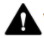

本指南不仅包含 Pixel 6a 随附的印刷版《安全保修手册》中的基本安全准则，还包含其他与 Pixel 6a 有关的安全、监管和保修信息。
安全和监管信息：请访问 g.co/pixel/safety 或依次前往设置  关于手机
关于手机  安全和监管手册。
安全和监管手册。
购买地所在国家/地区的保修详情（包括关于如何提出索赔的说明）：请访问 g.co/pixel/warranty。
设备的电子监管标签和比吸收率 (SAR) 值：
请依次前往设置  关于手机
关于手机  监管标签。
监管标签。
全方位在线帮助：请访问 g.co/pixel/help。
|  | 警告：健康和安全信息；请在使用之前仔细阅读，以降低遭遇人身伤害、不适、财产损失（包括 Pixel 6a 配件或任何已连接的设备损坏）和其他潜在危害的风险。 |
日常使用时请爱护手机。如果您拆卸、掉落、折弯、火烧、挤压或戳刺设备，可能会损坏手机或电池。如果手机的外壳已损坏、屏幕出现裂纹，或出现其他某种形式的物理损坏，请勿继续使用。使用损坏的手机可能会导致手机过热或人身伤害。请勿让手机接触液体，否则可能会导致短路和过热。如果您的手机受潮，请勿尝试使用外部热源将其烘干。
手机在温度介于 0° 到 35°C（32° 到 95°F）之间的环境中运行时性能最佳，并且应存放在温度介于 -20° 到 45°C（-4° 到 113°F）之间的环境中。请勿将手机放在温度可能超过 45°C (113°F) 的地方，如汽车仪表板上或暖气出口旁，因为这样做可能会损坏手机、导致电池过热或引起火灾。让手机远离热源，避免阳光直射。如果设备变得过热，请断开电源（如果已接通电源），将其移至温度较低的地方；在设备降温之前，请勿使用。手机在不超过海拔 2000 米（6562 英尺）的地方使用为宜。
在某些模式下使用手机产生的热量可能会比在常规使用情况下多，例如玩游戏、拍摄视频、使用手电筒或虚拟现实/增强现实功能时，这可能会导致手机进入省电模式或暂时关机。在上述模式下使用设备时要额外谨慎。如需详细了解与长时间接触热表面相关的风险，请参阅下文中的“长时间接触热表面”部分。
请勿尝试自行维修手机。拆卸设备可能会导致设备失去抗水能力，或造成人身伤害或设备损坏。
例如，设备包含的激光零件可能会在拆卸过程中损坏，这可能会导致您暴露在看不见的危险激光辐射中。
如果手机无法正常工作或已损坏，请与客户服务部门联系。如需了解详情，请访问 g.co/pixel/contact。
请确保电源适配器以及手机在使用中或充电时位于通风良好的地方。使用损坏的数据线/电源适配器，或者在受潮的情况下充电可能会导致火灾、触电、人身伤害、手机或其他财产受损。请勿在手机受潮时进行充电，也不要在阳光直射的环境中充电。
为设备充电时，请务必将电源适配器插入靠近设备且插拔方便的电源插座。如果空间不够，不能同时容下此电源适配器和其他插头/电源适配器，请勿将这两者强制插入电源插座。从电源插座拔下电源适配器时，请握住适配器，切勿拉扯电源线。请勿扭拧或挤夹数据线，也不要将插头强制插入端口。如果您在充电时收到提示您拔出充电设备或电源适配器的消息，请拔出充电设备或电源适配器。再次尝试充电前，请确保电源线插头和手机充电接口处干燥且无异物。
为手机充电只能使用随附的数据线或 Google 商店/Google 授权的转销商出售的兼容充电配件（应带有 Google 的“Made For”徽章）。交流电源适配器必须通过 IEC 60950-1“限功率电源”输出认证，以及/或归类为 IEC 62368-1 的 PS2 级（5 伏直流电，最大电流为 3 安；与支持 USB PD 的交流电源适配器搭配使用时，9 伏直流电，最大电流为 3 安），并且达到 CTIA 的电池系统 IEEE 1725 标准合规认证要求。不使用兼容的充电配件可能会导致火灾、触电、人身伤害，或者对设备和其他配件造成损坏。
手机及其充电器在正常使用过程中会发热，但符合适用的表面温度标准和限制。使用设备或为其充电时，请避免让其长时间接触皮肤，因为皮肤长时间接触热表面可能会导致不适或灼伤。请勿在睡眠时将设备或其电源适配器压在身下或贴身放置，也不要将其放置在毯子或枕头下。如果您的身体状况会影响皮肤感知热度的能力，请注意此问题。
本设备不是玩具。手机所含（或随附）的小部件、塑料、玻璃或金属元件以及边缘锋利的部件可能会造成人身伤害或引发窒息危险。因电源线和数据线缠绕而导致的儿童窒息已有先例。因此，请将手机的电源线和数据线放在儿童接触不到的地方（保持 0.9 米/3 英尺以上的距离），并且不要让儿童玩手机及其配件。他们可能会伤害到自己或他人，也可能会不小心损坏手机。如果误咽小部件，请立即就医。
 |
长时间暴露在高音量环境中（包括听音乐）可能会导致听力受损。为避免可能出现的听力损伤，请避免长时间保持高音量。如果长时间以高音量收听内容或背景环境有噪声，高音量声音听起来会感觉比实际音量小。使用头戴式耳机或入耳式耳机前，请先检查音量。 |
本手机内装有可充电锂离子电池。此电池属于敏感部件，在破损状态下可能会造成人身伤害，因此请勿尝试取出电池。如需更换电池，请与 Google 或 Google 授权的服务提供商联系。如需获取联系信息，请访问 g.co/pixel/contact。如果给设备更换电池的操作人员不是合格的专业人士，可能会导致设备受损。更换操作不当或使用不合格的电池可能会造成火灾、爆炸、漏液或其他危险。请杜绝以下情况：改装、改造或翻新电池、刺穿或试图将物体插入电池、让电池浸入或者接触水或其他液体，以及将电池暴露于明火、过热和/或其他危险环境中。
避免让电池发生短路或者让金属或导电物体与电池端子接触，也不要让手机或电池跌落。如果手机或电池跌落（尤其是跌落到硬质表面上时），并且您怀疑或观察到有损坏，请联系 Google 或 Google 授权服务提供商进行检查。如果电池发生泄漏，不要让泄漏的液体接触到眼睛、皮肤或衣服。如果液体接触到眼睛，千万不要揉眼。请立即用清水冲洗眼睛并迅速就医。
本手机内装有可充电锂离子电池。此电池符合 IEEE 1725 及其他适用标准。
请依照当地环境和运输法规处置和运输设备、电池和配件。请勿以不恰当的方式运输这些物品，也不要将它们当做常规生活垃圾处置。处置或运输不当可能会导致火灾、爆炸和/或其他危险。请勿打开、挤压、焚烧这些物品，或将其加热到 45°C (113°F) 以上。如需详细了解如何回收设备、电池和配件，请访问 g.co/pixel/recycle。
为防止损坏手机部件或内部电路，请勿在多尘、烟雾弥漫、潮湿或肮脏的环境中或磁场附近使用设备或其配件，也不要将它们存放在此类环境中。远离热源，避免阳光直射。请勿将手机放在汽车内或温度可能超过 45°C (113°F) 的地方，如汽车仪表板上、窗台上、暖气出口旁，或者长时间隔着玻璃受到阳光直射或强烈紫外线照射。将手机留在这类环境中可能会损坏手机、导致电池过热或者引起火灾或爆炸。
请勿在存放易燃易爆物的地方（例如：加油站、油库或化工厂）为手机充电，或在此类地点使用、存放或运输手机。请勿在进行爆破作业的地方或可能会爆炸的环境中使用无线设备，例如燃料或化学品的运输或储存区域，以及在空气中含有高浓度易燃化学品、烟雾或者微粒（例如谷物粉末、粉尘或金属粉末）的区域。在这些地方，一点火星就可能会引起爆炸或火灾，进而造成人身伤害甚至死亡。在可能存在这类危险的地方，请务必遵守其所有告示和标志的要求。
您可以在手机上使用地图和导航服务。地图和导航服务需要使用有效的数据连接和位置信息服务，并且并非随时随地都可以使用。地图和路线可能会不准确，服务所提供的地图、数据、路况信息、路线、内容和其他结果可能会与实际情况有所出入。请仔细判断路线，遵循所有适用的交通法规和标志，运用您的独立判断和常识，并自行承担使用地图和导航服务可能带来的风险。您始终对自己的行为及其带来的后果负责。AR 导航功能需要使用最新的 Google 街景图像，并要求户外光线明亮，此功能目前在印度暂时无法使用。
在从事某些活动时使用设备会使您分心，并可能将您自己或他人置于危险的境地。为降低出现事故的风险，请勿在驾驶、骑车、操作机器或从事任何可能导致严重后果的活动时使用设备（这也是很多国家/地区立法禁止的行为）。请遵循当地有关使用移动设备、头戴式耳机和头盔的法律。
本设备已经过评估，符合有关无线电波暴露的适用法规要求，且设计和制造均未超出适用的射频 (RF) 能量暴露发射限制。
在比吸收率 (SAR) 限值为每克人体组织平均 1.6 瓦/千克的国家/地区，本设备类型在紧贴头部使用时的最高 SAR 值分别为 1.19 瓦/千克 (Pixel 6a [GB62Z]) 或 1.18 瓦/千克 (Pixel 6a [GX7AS])，在距离身体 1.0 厘米（0.4 英寸）使用时的最高 SAR 值分别为 1.19 瓦/千克 (Pixel 6a [GB62Z]) 或 1.19 瓦/千克 (Pixel 6a [GX7AS])。在比吸收率 (SAR) 限值为每 10 克人体组织平均 2.0 瓦/千克的国家/地区，本设备类型在紧贴头部使用时的最高 SAR 值为 0.99 瓦/千克，在距离身体 5 毫米（0.2 英寸）使用时的最高 SAR 值为 1.31 瓦/千克。
您可以在手机上找到这些管辖区的适用 SAR 值，方法是依次前往：设置  关于手机
关于手机  监管标签。
监管标签。
如需减少射频能量接触，请使用免触摸功能或配件，如内置扬声器、头戴式耳机或其他类似配件。请确保设备的配件（如设备保护壳和设备保护套）均不含金属成分。避免设备与身体接触，以符合距离要求。
您可以在以下页面中找到有关 SAR 的更多信息：
请务必遵守禁止使用无线技术（如移动网络、WLAN）的规则。您的设备在设计时遵循了约束射频发射的法规，但使用无线设备可能会对其他电子设备造成不利影响。例如，在乘坐飞机或即将登机时，请务必按照航空公司的规定使用无线设备。在飞机上使用无线设备可能会干扰无线网络、危及飞机操纵，甚至可能是违法的。您或许可以在飞行模式下使用设备。
无线设备在紧急通信方面未必可靠。本设备通过无线电信号发挥作用，在某些情况下可能无法建立或保持连接。手机依靠可充电电池供电，电池可能会受温度、使用情况、破损及其他条件的影响。某些管辖区可能会通过无线网络传输急救信息，但您的设备不一定总能收到这类通信，具体取决于网络连接情况或其他因素。在部分国家/地区（或对于部分语言），可能无法使用某些功能或接收急救信息或通信。
手机使用了会发射电磁场的无线装置和其他组件，并且还装有磁铁。这些电磁场和磁铁可能会干扰医疗装置，例如心脏起搏器以及其他植入式医疗装置。请始终让手机及其充电器与医疗装置保持安全距离。如果您需要将医疗装置与手机同时使用或者在这些装置附近使用手机，但又存有疑问，请在使用手机之前咨询您的医疗服务提供方。如果您怀疑自己的手机对医疗装置造成了干扰，请关闭该 Google 设备，并向医生咨询有关您医疗装置的具体信息。
当医院、诊所或医疗保健机构要求您关闭无线设备时，请
遵守规定。这类要求旨在防止对敏感的医疗设备造成
干扰。
手机及其相关的健身应用功能不属于医疗装置，相关信息仅供参考。它们的预期用途不包括诊断疾病或其他问题，也不包括医治、监测、缓解、治疗或预防疾病或其他病症。
有些人可能会对长时间接触皮肤的穿戴式设备所用材料（例如镍或乳胶）产生不良反应。这可能是因过敏、皮肤刺激物（如肥皂或汗水）或其他因素所致。请让手机保持清洁干燥。如果您感到皮肤刺激或有任何身体部位感觉不适，请移开并停止使用手机，咨询医生。
少数用户可能会因为受到视觉刺激（如闪光或明亮的图案）或使用带有显示屏的电子产品而引发头痛、惊厥、昏迷、眼睛疲劳、疲乏或眼睛干涩。即使用户以前从未有过此类问题，这些症状仍有可能会出现。如果您有惊厥、昏迷、癫痫或其他病症的病史，又或者您认为可能会受手机影响而感到不适，请在使用设备之前咨询医生。如果您出现任何您认为可能由手机引起或受手机影响的症状（如头痛、昏迷或惊厥），请立即停止使用手机并就医。
重复性活动（例如在手机屏幕上打字、点按或滑动）可能会导致手指、手掌、手腕、手臂、肩膀或身体其他部位的不适。如果您因此类活动感到不适，请停止使用手机并咨询医生。
 |
注意 - 手机包含一个 1 类激光模块。设备的设计采用了符合要求的光学元件和保护外壳，因此能够确保用户接触的激光辐射不会超过 1 类级别。 |
本产品中的激光模块符合 21 CFR 1040.10 和 1040.11 条规定，但也遵守了 2019 年 5 月 8 日发布的激光公告 (Laser Notice) 第 56 条公告中的 IEC 60825-1 Ed. 3 规定。如未按照此处的规定进行控制、调整或操作，则可能会导致有害的辐射暴露。本产品应该由 Google 或其授权的服务提供商来提供维修服务。
激光模块：奥地利制造 (ams AG, Tobelbader Str. 30, 8141 Oberpremstätten, Austria)
在使用、存放或清洁手机时，请遵循下列准则：
请勿在温度低于 0°C (32°F) 或高于 35°C (95°F) 的环境下使用手机或为其充电。如果设备的内部温度超出正常运行环境温度，当设备尝试调节自身温度时，可能会出现以下现象：性能和连接能力降低、无法充电或显示屏/设备关闭。设备调节自身温度时，您可能无法使用该设备。请将设备移至更凉爽（或更温暖）的位置，等几分钟后再尝试使用。
在清洁前、遇到雷雨天气时或长时间不使用的情况下，请从电源上拔下手机和电源适配器。请勿在充电时清洁手机，以免造成人身伤害或损坏设备。避免接触可能会损坏产品表面的溶剂和粗糙性材料。请勿使用任何化学清洁剂、粉剂或其他化学试剂（如苯）清洁手机或配件。
接触化妆品、化学品和染色材料（如牛仔布）可能会弄脏浅色 Pixel 6a 和手机壳。
如需清洁手机，我们建议您使用柔软的无绒布轻轻擦净。请使用干布清除脏痕、污渍或灰尘，并使用微湿（未湿透）的布擦掉染色，如化妆品或新牛仔裤造成的染色。请使用屏幕清洁湿巾或眼镜擦拭布擦掉屏幕上的污渍或尘垢，使用普通家用肥皂或不含漂白剂的清洁湿巾清理背面和侧边上的污渍或尘垢。如需其他护理和清洁说明，请访问 g.co/pixel/care。
如需对 Pixel 6a（包括屏幕）进行消毒，建议您使用普通家用消毒湿巾或含有 70% 异丙醇的清洁湿巾。请勿使用含有漂白剂的湿巾。
手机符合 IP67 抗水标准（依据 IEC 标准 60529），但不防水。抗水能力不是永久性的，手机因正常使用而磨损、维修、拆卸或受到其他损害后，抗水能力可能会降低。请勿让手机接触液体，否则可能会导致短路和过热。设备充电器和其他配件并不具备抗水能力，请避免让其接触液体。浸液损坏会使保修失效。
避免将任何包含磁铁或对磁性敏感的物品（如信用卡、银行卡、录音带/录像带或磁性存储设备）放置在本手机或其电源线插头附近，否则您可能会丢失存储在这些物品上的信息。包含磁性敏感信息的物品应该与本手机保持至少 5 厘米（2 英寸）的距离。
手机只能由 Google 或 Google 授权的服务提供商维修。未经授权的维修或改装可能会导致设备永久损坏，并且可能影响您的保修范围和监管授权。如需获取经过授权的维修服务，请与客户服务人员联系。如需在线帮助和支持，请访问 g.co/pixel/help。如果您将手机送去维修，可能会收到一部替换手机（代替您原来的手机）。如果您将手机送去维修，可能会收到一部可能经过翻新的替换手机（代替您原来的手机）。在维修产品时，我们可能会使用翻新的零部件。维修或更换产品可能会导致用户生成的数据丢失。
如需查找 Pixel 6a 的专属监管信息、认证和合规标记，请在手机上依次前往设置  关于手机
关于手机  监管标签。
监管标签。
重要提示：本设备和盒内配件展现出了在各种情况（包括在系统组件之间使用合规的外围设备和屏蔽线缆）下的电磁兼容性 (EMC) 合规情况。请务必在系统组件之间使用合规的外围设备和屏蔽线缆，以尽可能不干扰无线装置、电视和其他电子设备。
注意：本设备经过测试，符合 FCC 规则第 15 节有关 B 类数字设备的限制。这些限制旨在针对民用设备带来的有害干扰提供合理保护。本设备会产生、使用并可能会发射射频能量；如果没有按照说明进行安装和使用，则可能会对无线电通信造成有害干扰。不过，无法保证在特定安装情况下不会造成干扰。如果本设备确实对无线电或电视接收造成有害干扰（可通过关闭和开启本设备来判断），建议用户尝试通过下列一种或多种措施来消除干扰：
未经 Google 明确许可的更改或改装行为可能导致您对本设备的使用权限失效。
本设备符合 FCC 规则第 15 节的规定。操作时需遵循下列两个条件：
型号：GB62Z、GX7AS
产品名称：Pixel 6a
责任方
Google LLC
1600 Amphitheatre Parkway
Mountain View, CA 94043
联系信息：g.co/pixel/contact
本设备已按照技术规范 ANSI C63.19 的规定经过评估和认证，能够与助听器兼容。助听器兼容性有下列两种衡量标准：
根据 FCC 关于无线设备的助听器兼容性规定，Pixel 6a 的评级均为 M3/T4。
根据 FCC 规则，如果手机的声振耦合评级为 M3 或 M4，或者电感耦合评级为 T3 或 T4，该手机被视为与助听器兼容。
对于所采用的部分无线技术，这些手机已通过测试和评级，能与助听器搭配使用。不过，这些手机中使用的一些新型无线技术可能尚未经过助听器兼容性测试。请务必使用助听器或人工耳蜗在不同地点充分测试手机的各种功能，以确定是否会听到任何干扰噪音。有关助听器兼容性的信息，请咨询您的服务提供商或 Google。如果您对退换货政策有任何疑问，请咨询您的服务提供商或手机零售商。
本设备符合 ICES-003 B 类限制。
Cet appareil est conforme aux limites de la norme NMB-003 pour appareils de classe B.
本设备符合 ISED 的免执照 RSS 标准。操作时需遵循下列两个条件：
Le présent appareil est conforme aux CNR d'ISDE Canada applicables aux appareils radio
exempts de licence. L'exploitation est autorisée aux deux conditions suivantes:
在频段 5150-5250 MHz 运行的设备只能在室内使用，以降低对同信道移动卫星系统造成有害干扰的可能性。
Les dispositifs fonctionnant dans la bande de 5 150 à 5 250 MHz sont réservés uniquement pour une utilisation à l’intérieur afin de réduire les risques de brouillage préjudiciable aux systèmes de satellites mobiles utilisant les mêmes canaux.
 |
Google LLC 在此声明，无线电设备类型 G1AZG 符合“Radio Equipment Regulation 2017”（2017 年无线电设备法规）的要求。您可以访问 g.co/pixel/conformity，查看完整的合规性声明。 |
在英国，在 5150 至 5350 MHz 和 5925 至 6425 MHz 频率范围内运行的设备只能在室内使用。
此处提供的数据是指在运行无线电设备的频段中传输的最大射频功率。
| 频率 | 电源 |
|---|---|
| WLAN 2400-2483.5 MHz | 小于 20 dBm |
| WLAN 5150-5350 MHz | 小于 23 dBm |
| WLAN 5470-5725 MHz | 小于 23 dBm |
| WLAN 5745-5825 MHz | 小于 14 dBm |
| WLAN 5925-6425 MHz (VLP/LPI) | 小于 14 dBm/小于 23 dBm |
| 蓝牙：2400-2483.5 MHz | 小于 20 dBm |
| NFC 13.56 MHz | 小于 -10 dBuA/m（距离为 10 米时） |
| GSM 900 | 小于 33.5 dBm |
| GSM 1800 | 小于 31 dBm |
| UMTS 频段 I/VIII | 小于 25.7 dBm |
| LTE：1、3、7、8、20、28、38、40、42 | 小于 25.5 dBm |
| LTE：38 HPUE | 小于 27.2 dBm |
| NR：n1、n3、n7、n8、n20、n28、n40、n77、n78 | 小于 25.3 dBm |
| NR：n77 HPUE、n78 HPUE | 小于 27.2 dBm |
若是以未经授权的方式改装这类设备或配件，或是改用或连接未经 Google 许可的数据线和设备，并因而对任何无线装置或电视信号造成干扰，Google 概不承担任何责任。用户需要负责消除由此类未经授权的改装、替换或连接行为造成的干扰。对于因用户未遵守以上准则而导致的任何损害或违反政府法规的行为，Google 及其授权的转销商或分销商概不负责。
本产品符合 2012 年第 3032 号法定文件《关于限制在电子电气设备中使用某些有害物成分的指令》(The Restriction of the Use of Certain Hazardous Substance in Electrical and Electronic Equipment Regulations)。
英国 REACH（“Registration, Evaluation, Authorization and Restriction of Chemicals”《化学品注册、评估、授权和限制法规》，2020 年第 1577 号法定文件）是英国的化学物质法规框架。Google 遵守该法规的所有要求，我们致力于为客户提供是否存在 REACH 高度关注物质 (SVHC) 的相关信息。如需了解相关信息，您可以通过 Env-Compliance@google.com 与 Google 联系。
 |
左侧的 WEEE 符号表示，根据当地法律法规，您的产品及其电池应与生活垃圾分开处理。在本产品达到使用寿命后，请将其送至当地权力机构指定的收集点，以安全的方式处置或回收再利用。 |
对产品及其电气配件和电池进行单独的收集和回收再利用有助于节约自然资源和保护人类健康，同时也可为环保尽一份力。
制造商：Google LLC 1600 Amphitheatre Parkway Mountain View, CA, USA 94043
Google Commerce Limited UK establishment, Belgrave House, 76 Buckingham Palace Road, London, SW1W 9TQ
| Google LLC 在此声明，无线电设备类型 G1AZG 符合 2014/53/EU 指令（无线电设备指令）的要求。您可以访问 g.co/pixel/conformity，查看完整的合规性声明。 |
在奥地利、比利时、保加利亚、塞浦路斯、捷克、德国、丹麦、爱沙尼亚、希腊、西班牙、芬兰、法国、克罗地亚、匈牙利、爱尔兰、意大利、立陶宛、卢森堡、拉脱维亚、马耳他、荷兰、波兰、葡萄牙、罗马尼亚、瑞典、斯洛文尼亚、斯洛伐克、英国（北爱尔兰）、瑞士、冰岛、列支敦士登、挪威、土耳其，在 5150 至 5350 MHz 频率范围内运行的设备只能在室内使用。
在奥地利、比利时、保加利亚、塞浦路斯、捷克、德国、丹麦、爱沙尼亚、希腊、西班牙、芬兰、法国、克罗地亚、匈牙利、爱尔兰、意大利、立陶宛、卢森堡、拉脱维亚、马耳他、荷兰、波兰、葡萄牙、罗马尼亚、瑞典、斯洛文尼亚、斯洛伐克、英国（北爱尔兰）、瑞士、冰岛、列支敦士登、挪威、土耳其，在 5925 至 6425 MHz 频率范围内（在这些频率可以使用的情况下）运行的设备只能在室内使用。
此处提供的数据是指在运行无线电设备的频段中传输的最大射频功率。
| 频率 | 电源 |
|---|---|
| WLAN 2400-2483.5 MHz | 小于 20 dBm |
| WLAN 5150-5350 MHz | 小于 23 dBm |
| WLAN 5470-5725 MHz | 小于 23 dBm |
| WLAN 5745-5825 MHz | 小于 14 dBm |
| WLAN 5925-6425 MHz (VLP/LPI) | 小于 14 dBm/小于 23 dBm |
| 蓝牙：2400-2483.5 MHz | 小于 20 dBm |
| NFC 13.56 MHz | 小于 -10 dBuA/m（距离为 10 米时） |
| GSM 900 | 小于 33.5 dBm |
| GSM 1800 | 小于 31 dBm |
| UMTS 频段 I/VIII | 小于 25.7 dBm |
| LTE：1、3、7、8、20、28、38、40、42 | 小于 25.5 dBm |
| LTE：38 HPUE | 小于 27.2 dBm |
| NR：n1、n3、n7、n8、n20、n28、n40、n77、n78 | 小于 25.3 dBm |
| NR：n77 HPUE、n78 HPUE | 小于 27.2 dBm |
若是以未经授权的方式改装这类设备或配件，或是改用或连接未经 Google 许可的数据线和设备，并因而对任何无线装置或电视信号造成干扰，Google 概不承担任何责任。用户需要负责消除由此类未经授权的改装、替换或连接行为造成的干扰。对于因用户未遵守以上准则而导致的任何损害或违反政府法规的行为，Google 及其授权的转销商或分销商概不负责。
设备在以下情况下符合射频规范：紧贴头部以及距离身体 5 毫米使用时（限值为 2 瓦/千克，平均范围为 10 克人体组织）以及紧贴肢体使用时（限值为 4 瓦/千克，平均范围为 10 克人体组织）。
对于 Pixel 6a，此设备类型测得的最大比吸收率 (SAR) 值是：头部 0.99 瓦/千克，身体 1.31 瓦/千克，肢体 2.99 瓦/千克。
设备使用注意事项
在某些特定情况下（如驾车时）禁止使用设备，在某些特定场所（如医院、飞机、加油站、学校等）可能会限制使用设备。
装有植入式电子装置（如起搏器、胰岛素泵、神经刺激器等）的用户在操作本设备时，必须至少将设备与植入式电子装置保持 15 厘米的距离，并且在使用设备打电话时应将设备置于与植入式电子装置相反的一侧。
为了减少接触的辐射量，我们建议：
|
左侧的 WEEE 符号表示，根据当地法律法规，您的产品及其电池应与生活垃圾分开处理。在本产品达到使用寿命后，请将其送至当地权力机构指定的收集点，以安全的方式处置或回收再利用。 |
对产品及其电气配件和电池进行单独的收集和回收再利用有助于节约自然资源和保护人类健康，同时也可为环保尽一份力。
该产品符合 2011 年 6 月 8 日欧洲议会和理事会指令 2011/65/EU《关于限制在电子电气设备中使用某些有害物成分的指令》及其修正案。
REACH（《化学品注册、评估、授权和限制法规》，EC 编号 1907/2006）是欧盟的化学物质法规框架。Google 遵守该法规的所有要求，我们致力于为客户提供是否存在 REACH 高度关注物质 (SVHC) 的相关信息。如需了解相关信息，您可以通过 Env-Compliance@google.com 与 Google 联系。
制造商：Google LLC 1600 Amphitheatre Parkway Mountain View, CA, USA 94043
Google Commerce Limited, 70 Sir John Rogerson’s Quay, Dublin 2, Ireland
|
符合 |
在 5GHz (W52/W53) 运行时，此设备只能在室内使用（与高功率无线电装置进行通信时除外）。
本设备属于 B 类设备。虽然本设备适用于住宅环境，但如果在无线电装置或电视接收器附近使用，则可能会导致信号不佳。请按照说明手册中的说明操作。
 VCCI-B
VCCI-B
您的手机可收发无线电信号，它不仅符合有关人体接触电磁场限制的国际准则，同时也符合印度电信部（“DoT”）、通信和信息技术部以及印度政府所设立的无线电波暴露准则。这些准则所采用的衡量单位称为比吸收率（“SAR”），指的是使用手机时人体所吸收的射频数量单位。根据印度针对移动设备所采用的 SAR 规定，质量为 1 克的人体组织可吸收的能量上限为 1.6 瓦/千克。
在紧贴头部以及距离身体 10 毫米处使用时，Pixel 6a 符合上述准则。请确保设备的配件（如设备保护壳和设备保护套）均不含金属成分。避免设备与身体接触，以符合距离要求。
对于 Pixel 6a，本设备类型测得的最大比吸收率 (SAR) 值如下：
您也可访问 DoT/电信工程中心的网站以查看 SAR 值。
虽然大部分实验室研究都无法证明射频辐射会对人体健康造成直接影响，但 DoT 仍建议用户在使用移动设备时需采取下列预防措施：
|
在印度，此标签表示该产品不得与生活垃圾丢弃在一起，而应存放于适当的设施回收点，以便回收与再利用。 |
Google 在此声明，本手机符合《2016 年电子废弃物（管理）条例》[E-Waste (Management) Rules, 2016；下称“条例”] 的规定，尤其是遵守本条例第 16 (1) 条的规定，即在制造电子电气设备时减少有害物质的使用，同时确保这类物质在均质材料的单位重量中的浓度不超出允许的上限（列于附件 II 中的项目除外）。
若以不当的方式处理、丢弃、意外损毁、损坏或回收电子废弃物，可能会造成失火、爆炸和/或其他危险（但不仅限于上述风险），而未受控制的废弃物丢弃行为则不利于资源再利用，可能会对环境造成严重或负面影响。部分电子废弃物可能包含有害化学物质，如果处置不当，则可能会严重污染水、土壤等自然资源。不当的处置方式可能会对植物、动物以及人类造成危害。

無線射頻暴露
以GX7AS而言，SAR標準值2.0W/kg；送測產品實測值為：0.87 W/kg。
台灣法規遵循
使用過度恐傷害視力
減少電磁波影響，請妥適使用
取得審驗證明之低功率射頻器材，非經核准，公司、商號或使用者均不得擅自變更頻率、加大功率或變更原設計之特性及功能。低功率射頻器材之使用不得影響飛航安全及干擾合法通信；經發現有干擾現象時，應立即停用，並改善至無干擾時方得繼續使用。前述合法通信，指依電信管理法規定作業之無線電通信。低功率射頻器材須忍受合法通信或工業、科學及醫療用電波輻射性電機設備之干擾。
應避免影響附近雷達系統之操作。
經過格式化的實際儲存空間容量會略減。
本公司所經銷之產品當手機雙SIM卡同時插入使用時，PWS接收系統eSIM以4G為主；若雙卡皆使用3G時，則以3G接收為主。
|
Equipment Name: Pixel 6a, Type designation: GX7AS |
|||||||
單元\ Unit |
限用物質及其化學符號 Restricted Substances and its chemical symbols |
||||||
| 鉛Lead (Pb) |
汞Mercury (Hg) |
鎘Cadmium (Cd) |
六價鉻 Hexavalent chromium (Cr+6) |
多溴聯苯 Polybrominated biphenyls (PBB) |
多溴二苯醚 Polybrominated diphenyl ethers (PBDE) |
||
| 外殼 Enclosure | O | O | O | O | O | O | |
| 電子元件 Electronic Component |
— | O | O | O | O | O | |
| 連接器 Connector | — | O | O | O | O | O | |
| 電路板 PCB | O | O | O | O | O | O | |
| 顯示 Display | O | O | O | O | O | O | |
| 電池 Battery | — | O | O | O | O | O | |
| 包裝 Packaging | O | O | O | O | O | O | |
| 其它 Other | O | O | O | O | O | O | |
|
備考1.〝超出0.1 wt %〞及〝超出0.01 wt %〞係指限用物質之百分比含量超出百分比含量基準值。 備考2.〝O〞係指該項限用物質之百分比含量未超出百分比含量基準值。 備考3.〝－〞係指該項限用物質為排除項目。 |
|||||||
| 无障碍功能 | 要求 - 说明 | 值 |
|---|---|---|
手机/硬件信息 |
||
|
触摸屏 |
此设备是否有触摸屏 |
是 |
|
如果有，是否是电容式（有时称为热激活式） |
是 |
|
|
按键辨别 |
各个按键是否能让用户轻松辨别 |
不适用 |
|
键盘上按键的辨别方式 - 分离式按键、使用凸起点辨识 |
不适用 |
|
|
按键中心点的间距 |
键盘上两个数字按键中心点之间的距离 |
不适用 |
|
键盘布局 |
键盘按 QWERTY 打字机键盘样式布局 |
是 |
|
可穿挂钥匙圈或挂绳的绳孔 |
有一个用于佩挂钥匙圈或颈带（挂绳）的小孔 |
否 |
|
功能键的区分 |
数字键的颜色或外形不同于其他按键，便于通过触觉或视觉进行分辨 |
不适用 |
|
设备外形 |
A. 翻盖式 B. 直板式 C. 滑盖式 D. 旋盖式 E. 触屏式 F. 其他 |
E |
|
操作系统 |
此手机采用的操作系统及版本 |
Android 12 |
|
防滑功能 |
手机表面有防滑涂层或凸线，以防止手机从手中滑落 |
否 |
便携性/灵敏性功能 |
||
|
手机重量 |
手机重量（包括电池） |
178 克 |
|
电池易于安装 |
电池是否清楚标记正确安装方向以及安装位置 |
不适用 |
|
支持扬声器模式 |
在拨号时和电话拨出后可以免提操作 |
是 |
|
按键保护或内凹设计 |
各个按键采用下凹设计或其他形式的保护机制，以减少用户误触按键的机会 |
不适用 |
|
无线入耳式/头戴式耳机 |
支持入耳式和头戴式（如蓝牙头戴式）无线耳机 |
是 |
|
耦合到设备 |
可以将电脑作为手机的文本输入终端。还可以协同使用手机与自定义设备。可以通过以下方式将手机和其他设备连接起来： |
|
|
数据线（电线） |
是 |
|
|
红外信号（可以像无线电波一样在空气中穿行，但不能穿过墙壁或其他固态物体） |
否 |
|
|
蓝牙/WLAN（可通过空气传播，并且可能会穿过墙壁或其他固体的无线电信号） |
是 |
|
|
除上述方式以外的其他连接方式（请说明）：NFC |
是 |
|
|
方便在桌面操作的平背设计 |
平背设计，方便放在桌面上使用 |
是 |
|
按任意键接听来电 |
用户可以按任意键来接听来电 |
否 |
|
手部操作 |
一些操作需要用手指张合或翻转，或者需要转动手腕 |
是 |
|
通过语音识别拨号 |
如果您的通讯录（您在手机上创建的私人“电话簿”）中保存了通话对象的姓名，只要说出此人的姓名，就可以拨打对方的号码 |
是 |
|
通过语音识别访问相关功能 |
可以对手机说出命令来启用某些功能，减少对键盘的使用 |
是 |
|
自动接听来电 |
能让电话在响铃指定次数之后，自动接听来电 |
否 |
视觉特征 |
||
|
触摸按键标记：“F”键和“J”键 |
“F”键和“J”键上有凸起的小点或隆起点，方便您通过触摸的方式区别这两个按键（本功能仅适用于具有 QWERTY 打字机式键盘的手机） |
不适用 |
|
标准数字键布局 |
数字键按标准方式布局，1、2、3 键在顶部，*、0、# 键在底部 |
是 - 触摸屏键盘 |
|
按键反馈 - 触觉 |
按下按键时会有实际的按键触感，方便您知道自己已按下按键 |
是 |
|
按键反馈 - 听觉 |
按键时，会有按键音，这样您就知道已按下 |
是 |
|
按键语音识别 - 播报数字 |
按下数字键时，系统会读出对应的数字，这样您就知道是否按对了数字键 |
是 |
|
按键语音识别 - 功能 |
按下数字键时听到的声音与按下功能键时听到的不同，这样您就能轻松区分这两类按键 |
是 |
|
可调节字体 - 样式 |
您可以改变屏幕上显示的字体式样，以便于轻松阅读 |
是 |
|
可调节字体 - 大小 |
您可以调整屏幕上显示的字体大小，以便于轻松阅读 |
是 |
|
个性化的快捷方式 |
您可以为单个按键或按键组合设置特定的快捷功能 |
是 |
|
显示屏特征 - 可调节的对比度操控 |
您可以调节显示屏的对比度，让文字和符号在屏幕背景下更清晰易识 |
是 |
|
显示屏特征 - 可调节的亮度操控 |
您可以调节显示屏的亮度，以便于轻松阅读 |
是 |
|
显示屏特征 - 主显示屏尺寸 |
主显示屏尺寸 |
6.134 英寸（宽高比为 20:9） |
|
显示屏特征 - 主显示屏分辨率 |
在主显示屏上显示文本和图片时采用的点（称为像素）数量。点越多意味着细节越清晰 |
1080 x 2400 (FHD+) |
|
显示屏特征 - 颜色区分度 |
色彩识别能力对正确阅读显示屏上的信息没有影响（举例来说，您无需具备辨别红色和绿色符号的能力） |
是 |
|
显示屏特征 - 符号/图标 |
您可以使用符号或图片以网格布局显示菜单。这样就能更轻松地理解和记住菜单项 |
是 |
|
显示屏特征 - 屏幕闪烁 |
主显示屏的闪烁频率（2 Hz 到 60 Hz 之间）不会对光敏性癫痫症患者造成影响 |
是 |
|
通讯录中来电者 ID 的语音播报 |
如果您的通讯录中保存了来电者的姓名，当您接到此人的来电时，手机会报出来电者姓名 |
否 |
|
短信语音播报：内置功能 |
可以为您朗读短信 |
是 |
|
语音菜单 |
可以为您朗读菜单选项，即使您无法看清屏幕内容，也可以使用各种功能 |
是 |
|
其他格式的用户手册 |
提供其他格式的用户手册，例如可在线访问的用户手册 |
是 |
听觉特征 |
||
|
振动提醒 |
您可以对手机进行设置，让其在接到来电或短信，以及发出警告提示时，振动提醒 |
是 |
|
视觉提醒 - 来电 |
接到来电或收到短信时，屏幕上显示视觉提醒。例如，存储在通讯录中的来电者姓名或照片 |
是 |
|
双向视频通讯 - 使用移动网络 |
可以通过移动网络进行视频通话，并且通话双方都能在视频中见到对方 |
是 |
|
双向视频通讯 - 使用 WLAN 网络 |
可以通过 WLAN 网络进行视频通话，并且通话双方都能在视频中见到对方 |
是 |
|
耳机 – 插头类型 |
将耳机连接到手机所需的插头类型 |
USB-C |
|
助听器兼容性 |
与助听器协同使用时，将手机设置为“T”模式，声音会更加清晰 |
是 |
|
其他助听设备 |
结合其他耦合技术操作设备时，声音会比较清楚 |
不适用 |
|
消息选项 - 彩信 |
您可以发送和接收含有照片、音频和视频剪辑的多媒体消息 |
是 |
|
短信个性化和重复使用 |
您可以创建可以快速发送给任何人的标准短信，无需每次重复输入短信内容。例如，“我正在开会，稍候回电” |
是 |
|
消息选项 - 电子邮件 |
您可以发送和接收电子邮件 |
是 |
|
互联网功能 |
您可以使用手机浏览网站，并使用其他基于互联网的服务 |
是 |
|
其他功能和特征 |
Google Pixel 6 Pro 属于触摸屏设备。不过，它有以下触摸键：电源键和音量控制键 |
是 |
|
可选功能和配件 |
操作系统和无障碍功能具有开放性特征，即：手机中包含 Android 操作系统自带的部分功能，并且这些功能在产品使用寿命期间可能会变更和升级 |
是 |
如需了解有限保修信息，还可以访问 Google 硬件保修中心。
Pixel、Google、G 徽标以及相关标志和徽标是 Google LLC 的商标。Wi-Fi® 和 Wi-Fi 徽标是 Wi-Fi Alliance 的商标。Bluetooth® 文字商标和徽标是 Bluetooth SIG, Inc. 所拥有的注册商标。所有其他商标均为其各自所有者的财产。